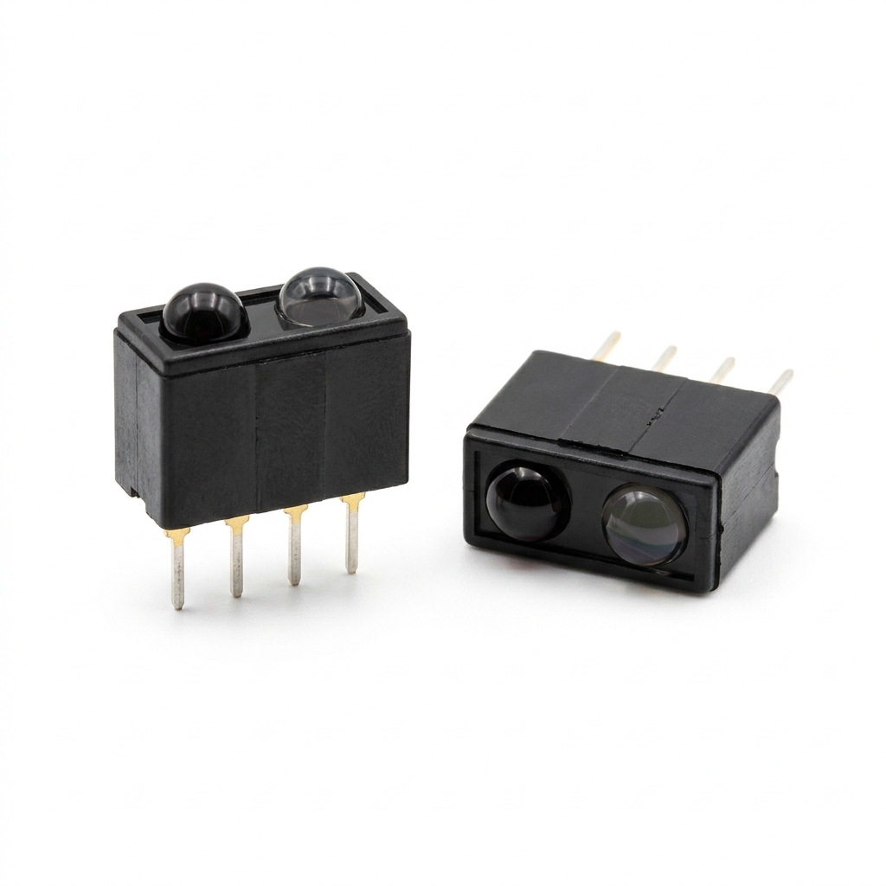

1. Sensores Ópticos CNY70 (×2)
👁️ Emisor IR + Fototransistor en un bloque
Sensor reflexivo compacto de 4 pines que integra un diodo emisor infrarrojo y un fototransistor receptor. Se cablean apuntando hacia el piso en la parte frontal para diferenciar la línea negra de la superficie blanca.
Observación Técnica: Sobre la línea negra, el pigmento absorbe la luz infrarroja y el fototransistor deja de conducir; sobre el blanco la refleja y conduce corriente hacia la etapa de control.